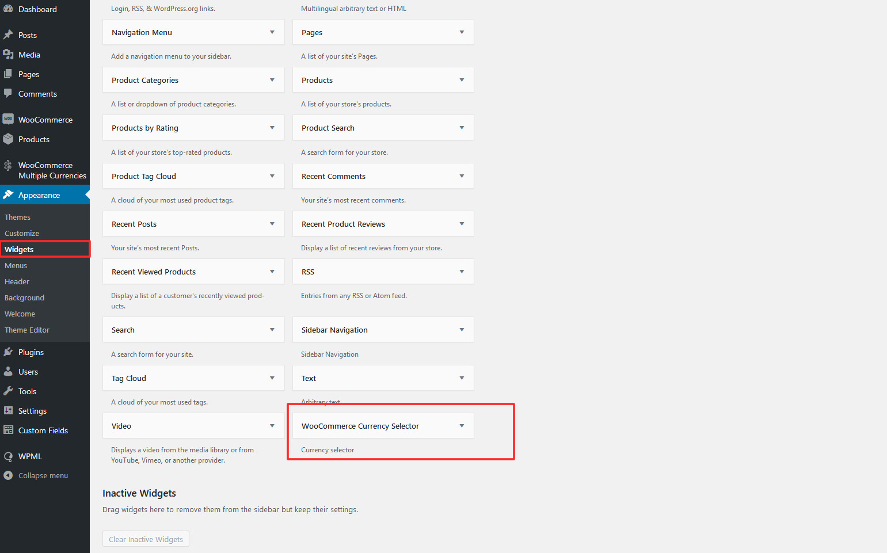
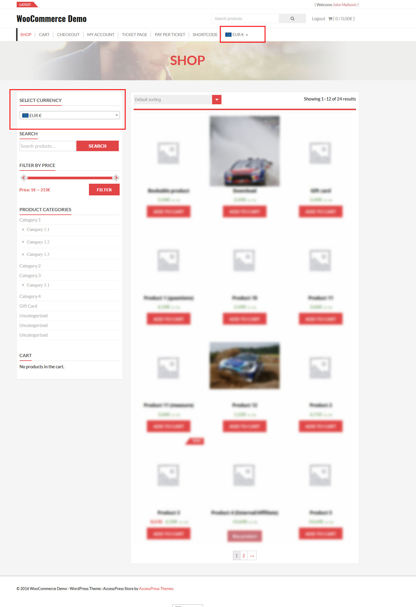

Through the WooCommerce Multiple Currencies -> Settings you can configure where to currency switcher can be displayed. It can be automatically be displayed on any page footer or as first/last element of any menu. The switcher can be also be displayed throug the special [wcmc_currency_selector] shortcode or the wcmc_currency_selector() function.
Using the
Through the WooCommerce Multiple Currencies -> Exchange rates menu you can set the frequency by which rates are automatically updated and set the exchange rates for the selected currencies. Rates can be set manually or automatically by clicking the Update rates button.
Just select the base currency and update and you are ready to go! You have no need to select any exchange rates service (as happens for many other plugins). The WooCommerce Multiple Currencies relies on its own service that provides the latest exchange rates without the need for the user to pay for 3rd party services or to set any additional tricky setting!
The WooCommerce Multiple Currencies allows you to render the currency swithcer using its special widget. You find it in the Appearance -> Widgets menu. Just add it to the widget area you wish!

Once selected in which position the currency selector has to be showed, the user will be able to select the preferred currency. The plugin will automatically switch the item prices.
